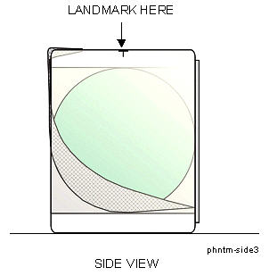

Operating Documentation
Direction 5440001-3, Rev# 6
Signa HDxt Service Methods
Module Version 1.0, Version Date 5/3/07
Operating Documentation |
| Required Persons | Preliminary Reqs | Procedure | Finalization |
|---|---|---|---|
| 1 |
| NOTE: | The Body SNR Sphere Phantom, 46-265635G4, is not provided with the System. If the Body SNR sphere is needed, the customer must order it. A Body Loader is provided with the system. |
| Item | Qty | Effectivity | Part# | Manufacturer | |
|---|---|---|---|---|---|
| · Body SNR Sphere | 1 | - | 46-265635G4 | - | |
| · SPT Body Loader or Long Body Loader | - | 2135652-2 | - | ||
| - | - | - | 46-287902G1 | - | |
| ||||
| POISON HAZARD! | ||||
| THE PHANTOM CONTAINS NICKEL CHLORIDE, A SUSPECTED CARCINOGE | ||||
| DO NOT INGEST. DISPOSE OF AS A HAZARDOUS WASTE ACCORDING TO STATE AND FEDERAL REGULATIONS. |
| Condition | Reference | Effectivity |
|---|---|---|
No image artifacts | - | - |
System Gain Calibration complete | - | - |
System Gain Calibration complete | - | - |
Click on [New Pt] and enter the following:
Id: geservice
Name: snr check
Weight (lb.): 111
| NOTE: | On the Patient Information screen, up to 32 characters can be typed in the Exam Description field as comments. On the Patient Position screen, up to 29 characters can be typed in the Series Description field as comments. (The comments are displayed on the Report Header Info screen.) |
| NOTE: | Possible equipment damage. Completely remove the Quad Head Coil from the cradle before performing any body scans. Failure to do so may damage the Head Coil T/R Network. |
Remove the head coil, if present, from the cradle.
Load the phantom on the table based on the loader you are using:
Setup using SPT Loader: Position the SPT body loader and body SNR sphere on the table and landmark per Illustration 2-1A. Check the temperature indicator on the SNR sphere. Make sure that the temperature is 22° C ± 2° C before starting the procedure. See Illustration 1
Illustration 1: SPT BODY LOADER AND BODY SNR SPHERE PHANTOM SETUP

Setup using Long Body Loader: Position the body SNR sphere in the center of the long body loader and landmark per Illustration 2-1B. Check the temperature indicator on SNR sphere. Make sure that the temperature is 22° C ± 2° C before starting the procedure. See Illustration 2.
Illustration 2: LONG BODY LOADER AND BODY SNR SPHERE PHANTOM SETUP

At the operator workspace, prepare the system for an SNR Check (Body, Axial) scan using the scan protocol (o.13.1) shown in the "Service Protocols" procedure service methods CD-ROM.
Press MOVE TO SCAN. Allow phantom solution to settle for 20 minutes before starting scan.
| NOTE: | SNR scans are particularly susceptible to flow artifacts. Artifacts appear as ovals or swirls in phantom image on subtracted image. They will cause excessively high noise measurements. If a problem exists, allow the phantom to settle for an additional 15-20 minutes and rescan using the same settings. |
Click on [Autoview], just below the Autoview image display screen; your images will be displayed automatically.
Click on [Save Series].
Click on [Auto Prescan]. After prescan, check the R1 value. R1 must equal 11 to get valid results. Record R1, R2, TG, and system frequency values in the Data Sheet at the end of this document, Body SNR Data. If R1 does not equal 11, some of the items to check are the following:
Check for proper cable length to preamp.
Ensure that slice thickness is within specification.
Download TPS again, then on the Service Desktop click on [Reset TPS]. Repeat steps Step 1 through 10.
Click on [Scan]. After scan #1 is complete, click on [Scan] again (two back-to-back scans).
After the series #1 back-to-back scans are complete, click on [New Series].
At the operator workspace, prepare the system for an SNR Check (Body, Sagittal) scan using the scan protocol (o.13.2) shown in the "Service Protocols" procedure.
Click on [Save Series], then [Prepare to Scan].
[Auto Prescan]. After prescan, check the R1 value. If R1 does not equal 11, refer to step 11 for items to check. Record R1, R2, TG, and system frequency values in Data Sheet.
Click on [Scan]. After the first scan of series #2 is complete, click on [Scan] again (two back-to-back scans).
After the series #2 back-to-back scans are complete, click on [New Series].
At the operator workspace, prepare the system for an SNR Check (Body, Coronal) scan using the scan protocol (o.13.3) shown in the "Service Protocols" procedure on the service methods CD-ROM.
Enter the anterior offset for Scanning Range start/end location. Find the offset as follows:
Click the  (Image Browser) icon. When the browser is displayed, click [Viewer].
(Image Browser) icon. When the browser is displayed, click [Viewer].
Click [Measure], then select the rectangular cursor tool. Rotate the cursor box 90 degrees clockwise by dragging the rotation handle until the handle marker is placed on the display's right side. See Illustration 3.
Illustration 3: FINDING CENTER OF IMAGE - ROTATED BOX CURSOR

Adjust the rectangular cursor size, dragging the size/shape handle, so that all four corners touch the edge of the image.
| NOTE: | A horizontal rectangle provides more accuracy in the horizontal direction. |
Click [Measure], then select the (report cursor) tool. Click the rectangle created in step c, then place the report cursor on top of the rotation handle of the rectangular cursor box. Read the A/P location. See Illustration 4.
Illustration 4: FINDING CENTER OF IMAGE - REPORT CURSOR

Click the  (scan) icon. In the SCANNING RANGE area, enter that value for
the A/P Start and End values (anterior offset) of the coronal scan.
(scan) icon. In the SCANNING RANGE area, enter that value for
the A/P Start and End values (anterior offset) of the coronal scan.
Click on [Save Series], then [Prepare to Scan].
Click on [Auto Prescan]. After prescan, check the R1 value. If R1 does not equal 11, refer to step 11 for items to check. Record R1, R2, TG, and system frequency values in Data Sheet 1.
Click on [Scan]. After the first scan of series #3 is complete, click on [Scan] again (two back-to-back scans).
For analysis, see SNR Image Analysis.
No finalization steps.